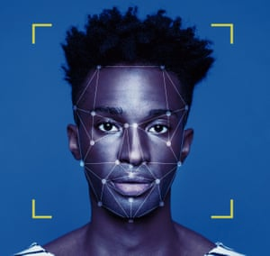

Biometric data falls into two categories: physical and behavioural. Physical data relies on characteristics that you are born with, for example, face shape and distinct fingerprints.  This data is used in fingerprint scanning, retina scanning and facial recognition, which are commonly used to unlock our devices. Behavioural data refers to unique characteristics that identify us through our actions. This can include analysis of handwriting, typing recognition as well as the tone and cadence of our voices. Touch identification has become increasingly popular to unlock phones and tablets over the last decade, unlocking almost every smartphone. The most commonly used technique of touch identification are capacitance scanners, which use arrays of capacitor circuits to collect data of the fingerprint. A capacitor is a device that can store energy in an electric field. By connecting capacitors to conductive plates on the scanner, they are able to detect ridges and gaps on the fingerprint and identify the user. Facial recognition is also a use of biometrics that has been developed as a form of security, with Google, Apple and Samsung all using this technology in their latest devices. Facial recognition works by mapping our facial features using the camera of the phone, and comparing it with a database to find a match. Apple states that their facial recognition system takes an infrared image as well as projects and analyzes over 30,000 invisible dots to create a depth map of the users face. Apple says the chances of another person unlocking a user’s phone is approximately 1 in 1,000,000. Many financial institutions use voice authentication as a form of biometric security on phone calls. In 2015, Manulife introduced voice authentication as an option, replacing PINs, passwords, and verification questions, all of which can be hacked. Their “voiceprint program” analyzes the customer’s voice and assigns a mathematical model to it, using unique vocal characteristics to protect their information. These forms of biometric security all depend on unique characteristics of an individual that are not subject to change. While these identification techniques have extremely developed over the last few decades; improvements and new technology are constantly being created. Because biometric security plays such an important role in our lives, it is important to ask the question if we trust this form of security with our data.
References
About Face ID advanced technology. (2019, October 29). Retrieved from
https://support.apple.com/en-ca/HT208108.
Clark, B. (2015, March 4). The History of Biometric Security, and How It's Being Used Today. Retrieved from
https://www.makeuseof.com/tag/the-history-of-biometric-security-and-how-its-being-used-today/.
How fingerprint scanners work: optical, capacitive, and ultrasonic variants explained. (2019, March 29). Retrieved from
https://www.androidauthority.com/how-fingerprint-scanners-work-670934/.
Statement of Voiceprint Password Privacy. Retrieved from
https://www.manulife.ca/privacy-policies/statement-of-voiceprint-password-privacy.html.
Symanovich, S. How does facial recognition work? Retrieved from
https://us.norton.com/internetsecurity-iot-how-facial-recognition-software-works.html.
Wong, C. Manulife calls on voice biometrics to authenticate customers over the phone. Retrieved from
https://www.itbusiness.ca/news/manulife-calls-on-voice-biometrics-to-authenticate-customers-over-the-phone/59355.
Images
“Use of Facial Recognition Recognition ‘Dangerly Irresponsible’”
https://www.bbc.com/news/technology-48222017